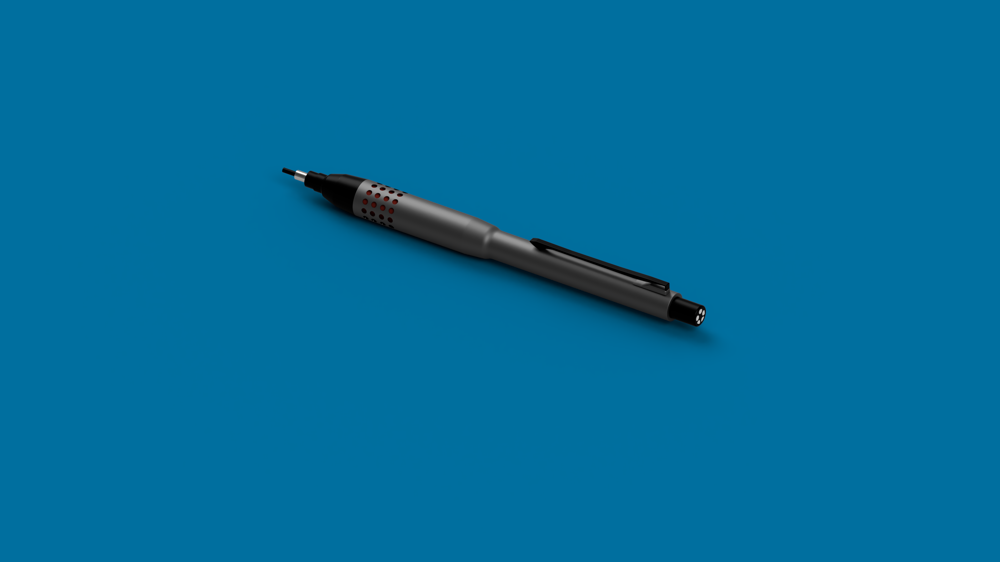
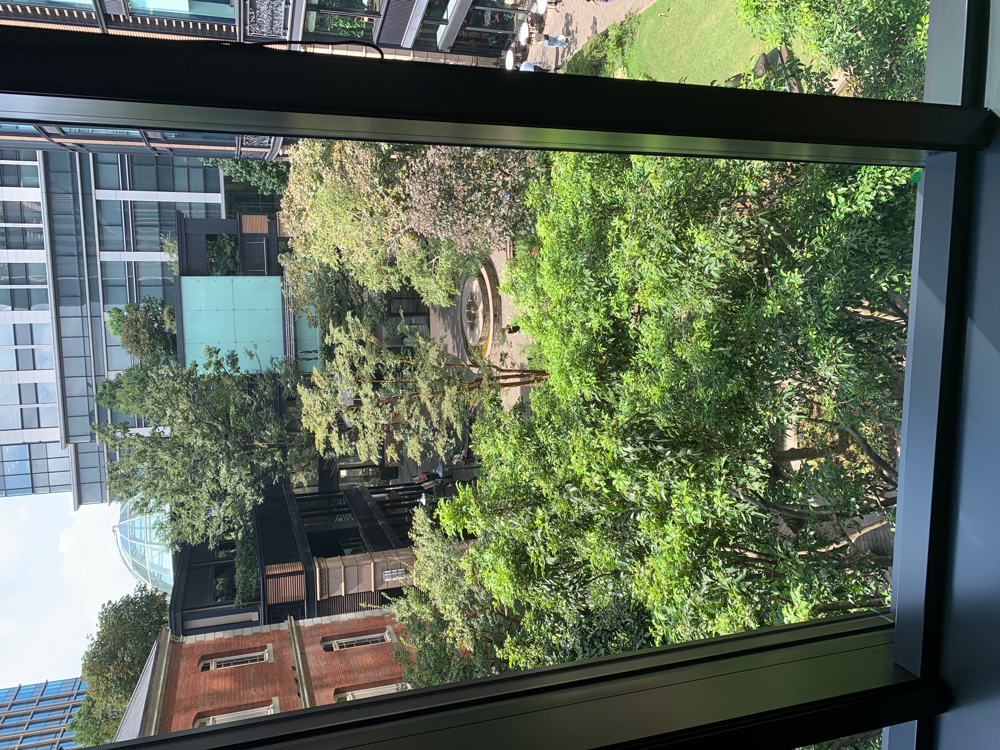
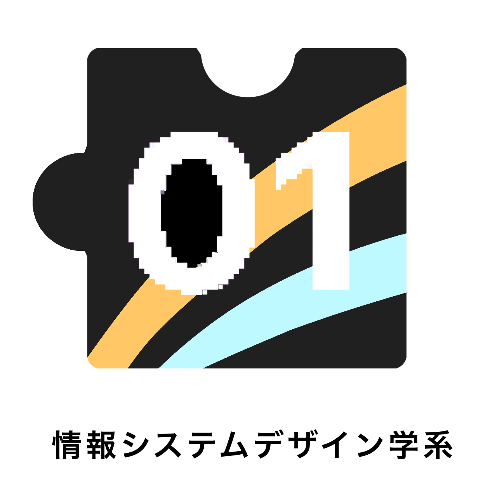
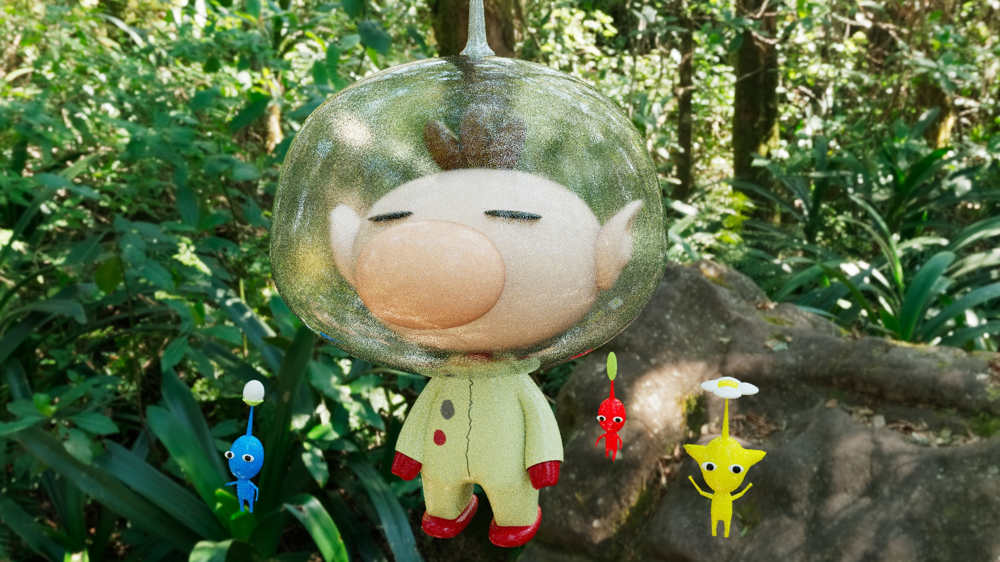
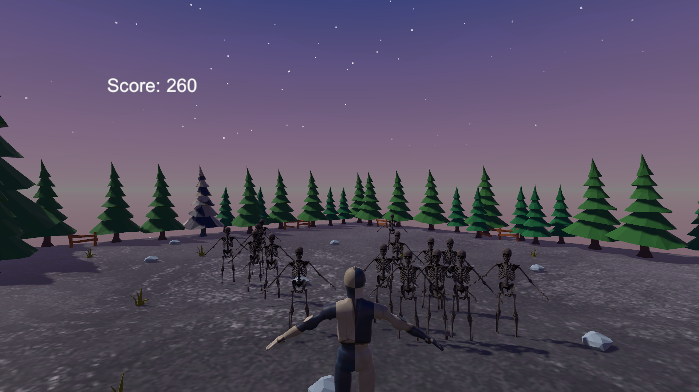
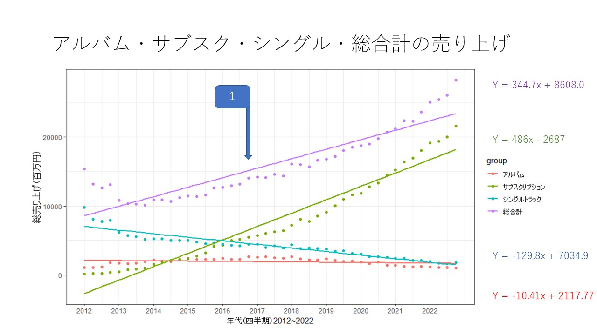
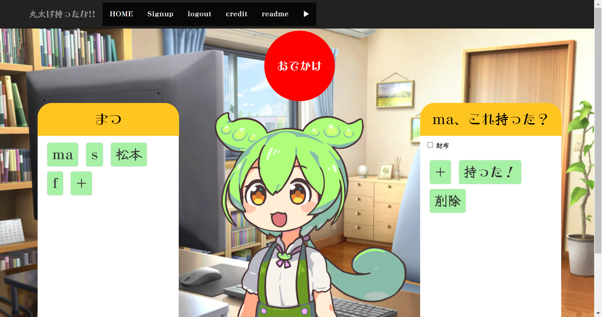

- 2004年生まれ
- 理系の大学に通う情報科の学生。
- せっかくなのでサイトを作ってみました。
- 大学で何をしてきたかを紹介したいと思います。
blog やってきたこと

初のプログラミング
2022.4
パソコンにほとんど触ったことがなかった私は、C言語の初回の授業で心が折れかけました。
開発環境って何？ターミナルって何？の状態で頑張りました。Hello World!!
開発環境って何？ターミナルって何？の状態で頑張りました。Hello World!!

CADでシャーペンを製作
2022.6
造形デザイン入門という授業でCAD（キャド）を触りました。
意外と楽しくて誕プレにもらったシャーペンを作りました。表面上だけ。
意外と楽しくて誕プレにもらったシャーペンを作りました。表面上だけ。

デザインの勉強でガブリエルシャネル展
2022.9
ココシャネルさんすごかった。

謎に回路実験
2022.10
電気電子系ではないのですが回路実験をしました。
いろいろなことに取り組むことは良いことだと思います。
いろいろなことに取り組むことは良いことだと思います。

学系のロゴを製作
2023.1
ロゴを考えようという授業でロゴを作りました。

3Dキャラクターを製作
2023.7
BlenderとMayaを使って製作しました。2つ使う意味はないです。
作ったキャラクターはあのキャラクターです。
作ったキャラクターはあのキャラクターです。

ゲームを製作
2023.7
Unityを使って3Dのゲームを製作しました。
弾撃ったり、ジャンプしたり、身代わり作ったり、スローモーションにしたりなどの機能をプレイヤーは行えますが、面白くありませんでした。
弾撃ったり、ジャンプしたり、身代わり作ったり、スローモーションにしたりなどの機能をプレイヤーは行えますが、面白くありませんでした。

サブスクによる音楽体験の変化について分析
2023.7
音楽を聴く方法は様々なものがあるが、サブスクはどのような変化をもたらしたのかを分析しました。

基本情報技術者試験（SPI）を取得
2023.10
方式が変わり試験も軟化していたため、１発でとることができました。よかった。

LINEヤフーのハッカソンに参加
2023.10
友達3人で協力してWebアプリケーションを製作しました。
内容は家族間で共有する忘れ物チェックリストです。私は主にUI（ユーザインターフェース）平たく言うと見た目や使いやすさを担当しました。
内容は家族間で共有する忘れ物チェックリストです。私は主にUI（ユーザインターフェース）平たく言うと見た目や使いやすさを担当しました。
文化祭の横断幕をデザイン
2023.11
今年からはじめて横断幕を取り入れましたが、その横断幕のデザインを担当しました。

ブログを開設
2023.12
ハッカソンで行った、知識を生かして個人的なブログを開設しました。